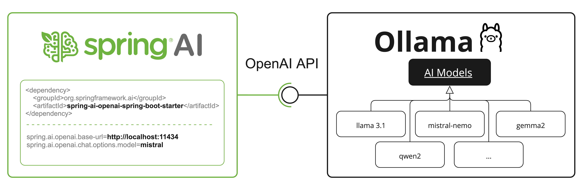
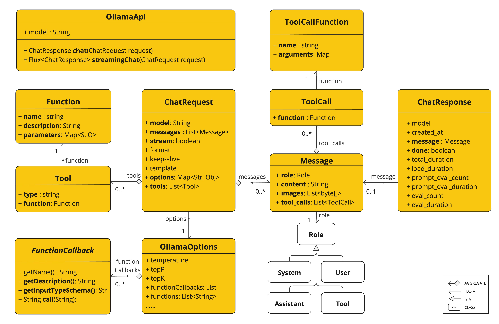

Ollama 聊天 #
使用 [
Ollama](
https://ollama.ai/)，您可以在本地运行各种大型语言模型 （LLM） 并从中生成文本。Spring AI 通过 [[Ollama](https://ollama.ai/)](https://ollama.ai/)ChatModel API 支持 [
Ollama](
https://ollama.ai/) 聊天完成功能。
先决条件 #
您首先需要访问 Ollama 实例。有几个选项，包括：
- 在本地计算机上下载并安装 Ollama。
- 通过 Testcontainers 配置和运行 Ollama。
- 通过 Kubernetes 服务绑定绑定到 Ollama 实例。 您可以从 [ Ollama 模型库]( https://ollama.com/library)中提取要在应用程序中使用的模型：
ollama pull <model-name>
您还可以提取数千个免费的 [ GGUF 紧贴脸模型]( https://huggingface.co/models?library=gguf&sort=trending)中的任何一个：
ollama pull hf.co/<username>/<model-repository>
或者，您可以启用选项以自动下载任何需要的模型：[ Auto-pull Models （自动拉取模型](#auto-pulling-models) ）。
自动配置 #
Spring AI 为 Ollama 聊天集成提供了 Spring Boot 自动配置。要启用它，请将以下依赖项添加到项目的 Maven pom.xml 或 Gradle build.gradle 构建文件中：
基本属性 #
前缀 spring.ai.ollama 是配置与 Ollama 的连接的属性前缀。
以下是用于初始化 Ollama 集成和[
自动拉取模型](#auto-pulling-models)的属性。
聊天属性 #
前缀 spring.ai.ollama.chat.``options``` 是配置 Ollama 聊天模型的属性前缀。它包括 Ollama 请求（高级）参数，例如 ``model``、``keep-alive`` 和 ``format`` 以及 Ollama ``model`` ``options`` 属性。 以下是 Ollama 聊天模型的高级请求参数： 其余选项`属性基于 [
Ollama Valid Parameters and Values](
https://github.com/ollama/ollama/blob/main/docs/modelfile.md#valid-parameters-and-values) 和 [
Ollama Types](
https://github.com/ollama/ollama/blob/main/api/types.go)。默认值基于 [
Ollama Types](
https://github.com/ollama/ollama/blob/main/api/types.go) Defaults。
运行时选项 #
[
OllamaOptions.java](
https://github.com/spring-projects/spring-ai/blob/main/models/spring-ai-ollama/src/main/java/org/springframework/ai/ollama/api/[OllamaOptions.java](https://github.com/spring-projects/spring-ai/blob/main/models/spring-ai-ollama/src/main/java/org/springframework/ai/ollama/api/OllamaOptions.java)) 类提供模型配置，例如要使用的模型、温度等。
启动时，可以使用 OllamaChatModel（api， options） 构造函数或 spring.ai.ollama.chat.options.* 属性来配置默认选项。
在运行时，您可以通过向 Prompt 调用添加新的特定于请求的选项来覆盖默认选项。例如，要覆盖特定请求的默认型号和温度：
ChatResponse response = chatModel.call(
new Prompt(
"Generate the names of 5 famous pirates.",
OllamaOptions.builder()
.model(OllamaModel.LLAMA3_1)
.temperature(0.4)
.build()
));
自动拉取模型 #
Spring AI Ollama 可以在模型在 Ollama 实例中不可用时自动拉取模型。此功能对于开发和测试以及将应用程序部署到新环境特别有用。 拉取模型有三种策略：
- always（在 PullModelStrategy.ALWAYS 中定义）：始终拉取模型，即使它已经可用。有助于确保您使用的是最新版本的模型。
- when_missing （定义于 PullModelStrategy.WHEN_MISSING ）：仅在模型尚不可用时拉取模型。这可能会导致使用旧版本的模型。
- never （defined in PullModelStrategy.NEVER）：从不自动拉取模型。 通过配置属性和默认选项定义的所有模型都可以在启动时自动拉取。您可以使用配置属性配置拉取策略、超时和最大重试次数：
spring:
ai:
ollama:
init:
pull-model-strategy: always
timeout: 60s
max-retries: 1
您可以在启动时初始化其他模型，这对于在运行时动态使用的模型非常有用：
spring:
ai:
ollama:
init:
pull-model-strategy: always
chat:
additional-models:
- llama3.2
- qwen2.5
如果只想将拉取策略应用于特定类型的模型，则可以从初始化任务中排除聊天模型：
spring:
ai:
ollama:
init:
pull-model-strategy: always
chat:
include: false
此配置会将拉取策略应用于除聊天模型之外的所有模型。
函数调用 #
您可以使用 OllamaChatModel 注册自定义 Java 函数，并让 Ollama 模型智能地选择输出包含参数的 JSON 对象，以调用一个或多个已注册的函数。这是一种将 LLM 功能与外部工具和 API 连接起来的强大技术。阅读有关[
工具调用](../tools.html)的更多信息。
模 态 #
多模态是指模型同时理解和处理来自各种来源的信息（包括文本、图像、音频和其他数据格式）的能力。
Ollama 中支持多模态的一些模型是 [
LLaVA](
https://ollama.com/library/llava) 和 Bak[
LLaVA](
https://ollama.com/library/llava)（请参阅[
完整列表](
https://ollama.com/search?c=vision) ）。有关更多详细信息，请参阅 [
LLaVA](
https://ollama.com/library/llava)：大型语言和视觉助手 。
Ollama [
消息 API](
https://github.com/ollama/ollama/blob/main/docs/api.md#parameters-1) 提供了一个 “images” 参数，用于将 base64 编码的图像列表与消息合并。
Spring AI 的 [
Message](
https://github.com/spring-projects/spring-ai/blob/main/spring-ai-model/src/main/java/org/springframework/ai/chat/messages/[Message](https://github.com/spring-projects/spring-ai/blob/main/spring-ai-model/src/main/java/org/springframework/ai/chat/messages/Message.java).java) 接口通过引入 [
Media](
https://github.com/spring-projects/spring-ai/blob/main/spring-ai-model/src/main/java/org/springframework/ai/model/[Media](https://github.com/spring-projects/spring-ai/blob/main/spring-ai-model/src/main/java/org/springframework/ai/model/Media.java).java) 类型来促进多模态 AI 模型。此类型包含有关消息中媒体附件的数据和详细信息，将 Spring org.springframework.util.MimeType 和 a org.springframework.core.io.Resource 用于原始媒体数据。
下面是一个摘自 [
OllamaChatModelMultimodalIT.java](
https://github.com/spring-projects/spring-ai/blob/main/models/spring-ai-ollama/src/test/java/org/springframework/ai/ollama/[OllamaChatModelMultimodalIT.java](https://github.com/spring-projects/spring-ai/blob/main/models/spring-ai-ollama/src/test/java/org/springframework/ai/ollama/OllamaChatModelMultimodalIT.java)) 的简单代码示例，说明了用户文本与图像的融合。
var imageResource = new ClassPathResource("/multimodal.test.png");
var userMessage = new UserMessage("Explain what do you see on this picture?",
new Media(MimeTypeUtils.IMAGE_PNG, this.imageResource));
ChatResponse response = chatModel.call(new Prompt(this.userMessage,
OllamaOptions.builder().model(OllamaModel.LLAVA)).build());
该示例显示了一个将 multimodal.test.png 图像作为输入的模型：
 以及文本消息 “Explain what do you see on this picture？”，并生成如下响应：
以及文本消息 “Explain what do you see on this picture？”，并生成如下响应：
结构化输出 #
Ollama 提供自定义[
结构化输出](
https://ollama.com/blog/structured-outputs) API，确保您的模型生成的响应严格符合您提供的 JSON 架构 。除了现有的 Spring AI 模型无关的[
结构化输出](
https://ollama.com/blog/structured-outputs)转换器之外，这些 API 还提供了增强的控制和精度。
配置 #
Spring AI 允许您使用 OllamaOptions 构建器以编程方式配置响应格式。
使用聊天选项生成器 #
您可以使用 OllamaOptions 构建器以编程方式设置响应格式，如下所示：
String jsonSchema = """
{
"type": "object",
"properties": {
"steps": {
"type": "array",
"items": {
"type": "object",
"properties": {
"explanation": { "type": "string" },
"output": { "type": "string" }
},
"required": ["explanation", "output"],
"additionalProperties": false
}
},
"final_answer": { "type": "string" }
},
"required": ["steps", "final_answer"],
"additionalProperties": false
}
""";
Prompt prompt = new Prompt("how can I solve 8x + 7 = -23",
OllamaOptions.builder()
.model(OllamaModel.LLAMA3_2.getName())
.format(new ObjectMapper().readValue(jsonSchema, Map.class))
.build());
ChatResponse response = this.ollamaChatModel.call(this.prompt);
与 BeanOutputConverter 实用程序集成 #
您可以利用现有的 [ BeanOutputConverter](../structured-output-converter.html#_bean_output_converter) 实用程序从域对象自动生成 JSON 模式，然后将结构化响应转换为特定于域的实例：
record MathReasoning(
@JsonProperty(required = true, value = "steps") Steps steps,
@JsonProperty(required = true, value = "final_answer") String finalAnswer) {
record Steps(
@JsonProperty(required = true, value = "items") Items[] items) {
record Items(
@JsonProperty(required = true, value = "explanation") String explanation,
@JsonProperty(required = true, value = "output") String output) {
}
}
}
var outputConverter = new BeanOutputConverter<>(MathReasoning.class);
Prompt prompt = new Prompt("how can I solve 8x + 7 = -23",
OllamaOptions.builder()
.model(OllamaModel.LLAMA3_2.getName())
.format(outputConverter.getJsonSchemaMap())
.build());
ChatResponse response = this.ollamaChatModel.call(this.prompt);
String content = this.response.getResult().getOutput().getText();
MathReasoning mathReasoning = this.outputConverter.convert(this.content);
OpenAI API 兼容性 #
Ollama 与 OpenAI API 兼容，您可以使用 [
Spring AI OpenAI](openai-chat.html) 客户端与 Ollama 交谈并使用工具。为此，您需要将 OpenAI 基本 URL 配置为您的 Ollama 实例： spring.ai.openai.chat.base-url=http://localhost:11434 并选择提供的 Ollama 模型之一： spring.ai.openai.chat.options.model=mistral 。

查看 [
OllamaWithOpenAiChatModelIT.java](
https://github.com/spring-projects/spring-ai/blob/main/models/spring-ai-openai/src/test/java/org/springframework/ai/openai/chat/proxy/[OllamaWithOpenAiChatModelIT.java](https://github.com/spring-projects/spring-ai/blob/main/models/spring-ai-openai/src/test/java/org/springframework/ai/openai/chat/proxy/OllamaWithOpenAiChatModelIT.java)) 测试，了解在 Spring AI OpenAI 上使用 Ollama 的示例。
HuggingFace 模特 #
Ollama 可以开箱即用地访问所有 [
GGUF Hugging Face](
https://huggingface.co/models?library=gguf&sort=trending) 聊天模型。您可以按名称拉取这些模型中的任何一个： ollama pull hf.co/<username>/<model-repository> 或配置自动拉取策略： [
自动拉取模型](#auto-pulling-models) ：
spring.ai.ollama.chat.options.model=hf.co/bartowski/gemma-2-2b-it-GGUF
spring.ai.ollama.init.pull-model-strategy=always
- spring.ai.ollama.chat.options.model ：指定要使用的紧贴面部 GGUF 模型 。
- spring.ai.ollama.init.pull-model-strategy=always ：（可选）在启动时启用自动拉取模型。对于生产环境，您应该预先下载模型以避免延迟： ollama pull hf.co/bartowski/gemma-2-2b-it-GGUF .
样品控制器 #
[
创建一个新](
https://start.spring.io/)的 Spring Boot 项目，并将 添加到您的 spring-ai-starter-model-ollama pom（或 gradle）依赖项中。
在 src/main/resources 目录下添加一个 application.yaml 文件，以启用和配置 Ollama 聊天模型：
spring:
ai:
ollama:
base-url: http://localhost:11434
chat:
options:
model: mistral
temperature: 0.7
这将创建一个 OllamaChatModel 实现，您可以将其注入到您的类中。下面是一个简单的 @RestController 类的示例，该类使用 chat 模型生成文本。
@RestController
public class ChatController {
private final OllamaChatModel chatModel;
@Autowired
public ChatController(OllamaChatModel chatModel) {
this.chatModel = chatModel;
}
@GetMapping("/ai/generate")
public Map<String,String> generate(@RequestParam(value = "message", defaultValue = "Tell me a joke") String message) {
return Map.of("generation", this.chatModel.call(message));
}
@GetMapping("/ai/generateStream")
public Flux<ChatResponse> generateStream(@RequestParam(value = "message", defaultValue = "Tell me a joke") String message) {
Prompt prompt = new Prompt(new UserMessage(message));
return this.chatModel.stream(prompt);
}
}
手动配置 #
如果您不想使用 Spring Boot 自动配置，则可以在应用程序中手动配置 Ollama``ChatModel```。OllamaChatModel``` 实现 ChatModel 和 StreamingChatModel，并使用[[低级 OllamaApi 客户端](#low-level-api)](#low-level-api)连接到 Ollama 服务。 要使用它，请将 spring-ai-ollama依赖项添加到项目的 Mavenpom.xml或 Gradlebuild.gradle构建文件中： 接下来，创建一个OllamaChatModel`` 实例，并使用它来发送文本生成请求：
var ollamaApi = OllamaApi.builder().build();
var chatModel = OllamaChatModel.builder()
.ollamaApi(ollamaApi)
.defaultOptions(
OllamaOptions.builder()
.model(OllamaModel.MISTRAL)
.temperature(0.9)
.build())
.build();
ChatResponse response = this.chatModel.call(
new Prompt("Generate the names of 5 famous pirates."));
// Or with streaming responses
Flux<ChatResponse> response = this.chatModel.stream(
new Prompt("Generate the names of 5 famous pirates."));
OllamaOptions 提供所有聊天请求的配置信息。
低级 OllamaApi 客户端 #
[
OllamaApi](
https://github.com/spring-projects/spring-ai/blob/main/models/spring-ai-ollama/src/main/java/org/springframework/ai/ollama/api/[OllamaApi](https://github.com/spring-projects/spring-ai/blob/main/models/spring-ai-ollama/src/main/java/org/springframework/ai/ollama/api/OllamaApi.java).java) 为 [
Ollama Chat Completion API](
https://github.com/ollama/ollama/blob/main/docs/api.md#generate-a-chat-completion) [
Ollama Chat Completion API](
https://github.com/ollama/ollama/blob/main/docs/api.md#generate-a-chat-completion) 提供了一个轻量级 Java 客户端。
下面的类图说明了 OllamaApi 聊天接口和构建块：

OllamaApi ollamaApi = new OllamaApi("YOUR_HOST:YOUR_PORT");
// Sync request
var request = ChatRequest.builder("orca-mini")
.stream(false) // not streaming
.messages(List.of(
Message.builder(Role.SYSTEM)
.content("You are a geography teacher. You are talking to a student.")
.build(),
Message.builder(Role.USER)
.content("What is the capital of Bulgaria and what is the size? "
+ "What is the national anthem?")
.build()))
.options(OllamaOptions.builder().temperature(0.9).build())
.build();
ChatResponse response = this.ollamaApi.chat(this.request);
// Streaming request
var request2 = ChatRequest.builder("orca-mini")
.ttream(true) // streaming
.messages(List.of(Message.builder(Role.USER)
.content("What is the capital of Bulgaria and what is the size? " + "What is the national anthem?")
.build()))
.options(OllamaOptions.builder().temperature(0.9).build().toMap())
.build();
Flux<ChatResponse> streamingResponse = this.ollamaApi.streamingChat(this.request2);